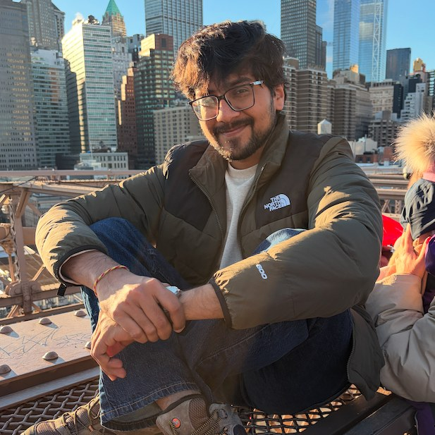

Graduate Researcher — UC Irvine
Edge AI and wireless systems research in Prof. Levorato's lab: modifying srsLTE stack, socket-level pipelines, and MAC-layer instrumentation on the Colosseum emulator.

I am an M.S. student in Electrical Engineering and Computer Science at UC Irvine, where I work with Prof. Marco Levorato on edge AI and wireless systems. Before graduate school I was a software engineer at Oracle Financial Services Software.
My work sits between machine learning systems and the networks they run on: splitting inference across devices and edge servers, and scheduling computation under unreliable wireless links. I care about evaluating these systems against realistic wireless conditions rather than idealized simulation alone. My research interests are evolving toward self-supervised learning and real-time embedded systems.
Modified the srsLTE stack and instrumented the MAC layer on the Colosseum emulator to measure split-inference latency over a live LTE link.
EECS 241A Digital Communications · EECS 248A Networks Networks projects →
Built a dynamic timer tick in the xv6-riscv kernel that cut average usertests ticks by 29.5%, and a cooperative scheduler that switches processes from a RISC-V trap handler.
EECS 211 System Software · EECS 213 Architecture · EECS 222 SystemC Modeling Systems projects →
Two years in production at Oracle, shipping 20+ features to a retail banking platform, including payment workflows from the UI through to Oracle Database on WebLogic. Since then, a retrieval-augmented app built on Amazon Bedrock.
Java · Python · Oracle Database · AWS Software projects →
Edge AI and wireless systems research in Prof. Levorato's lab: modifying srsLTE stack, socket-level pipelines, and MAC-layer instrumentation on the Colosseum emulator.
Built 20+ features for a retail banking platform through to production, including payment transaction workflows and front-end validations backed by Oracle Database, running on WebLogic application servers.
Partitioned an object-detection model across a mobile device and a server GPU, then measured how the split point and compression level trade off against accuracy and latency under real LTE conditions on a wireless emulator.
Implemented trap entry via mtvec, three processes with per-process saved PCs, switched by rewriting mepc inside the ecall handler.
Implemented a dynamic timer tick in the MIT xv6-riscv kernel, instrumenting context switches, timer activity, and process states in kernel and user space; average usertests execution ticks fell 29.5% from the static-tick baseline.
Built an RNN next-step predictor for 3-axis accelerometer data (MotionSense); measured per-subject MSE degradation across age/gender groups and explained it via PCA axis loadings.
Embedded 32-D latents from a multimodal autoencoder (front-camera, LiDAR BEV, pose-derived dynamics; PandaSet) onto a 2D Isomap manifold, clustered it with K-means, and showed the clusters correspond to driving regimes via speed and LiDAR-range overlays.
Built a ROS navigation stack that plans a route with RRT and tracks it with a PID pose controller in Gazebo.
Trained a neural network to imitate an MPC expert driving a differential-drive robot, replacing the hand-tuned controller.
Implemented 4-QAM and 64-QAM modulation, AWGN transmission, and coherent demodulation in MATLAB, extending a fixed 16-QAM reference to arbitrary square constellations; benchmarked simulated bit error rates.
A Streamlit app that compares a resume against a job description using Bedrock's Converse API. Uploaded documents go to an S3-backed Knowledge Base and trigger an ingestion job, so answers come from retrieval-augmented generation over the user's own files.
Coursework
Fall 2026 · in progress
Spring 2026
Winter 2026
Fall 2025
An end-to-end NLP pipeline that predicts Big Five (OCEAN) personality traits from text, trained on the Big-5 Essays and MBTI-derived datasets.